- 00 导读 解读OWASP Top10 2021.md.html
- 00 开篇词 从黑客的视角找漏洞，从安全的角度优雅coding.md.html
- 01 失效的访问控制：攻击者如何获取其他用户信息？.md.html
- 02 路径穿越：你的Web应用系统成了攻击者的资源管理器？.md.html
- 03 敏感数据泄露：攻击者如何获取用户账户？.md.html
- 04 权限不合理：攻击者进来就是root权限？.md.html
- 05 CSRF：为什么用户的操作他自己不承认？.md.html
- 06 加密失败：使用了加密算法也会被破解吗？.md.html
- 07 弱编码：程序之间的沟通语言安全吗？.md.html
- 08 数字证书：攻击者可以伪造证书吗？.md.html
- 09 密码算法问题：数学知识如何提高代码可靠性？.md.html
- 10 弱随机数生成器：攻击者如何预测随机数？.md.html
- 11 忘记加“盐”：加密结果强度不够吗？.md.html
- 12 注入（上）：SQL注入起手式.md.html
- 13 注入（下）：SQL注入技战法及相关安全实践.md.html
- 14 自动化注入神器（一）：sqlmap的设计思路解析.md.html
- 15 自动化注入神器（二）：sqlmap的设计架构解析.md.html
- 16 自动化注入神器（三）：sqlmap的核心实现拆解.md.html
- 17 自动化注入神器（四）：sqlmap的核心功能解析.md.html
- 19 失效的输入检测（上）：攻击者有哪些绕过方案？.md.html
- 20 失效的输入检测（下）：攻击者有哪些绕过方案？.md.html
- 21 XSS（上）：前端攻防的主战场.md.html
- 22 XSS（中）：跨站脚本攻击的危害性.md.html
- 23 XSS（下）：检测与防御方案解析.md.html
- 24 资源注入：攻击方式为什么会升级？.md.html
- 25 业务逻辑漏洞：好的开始是成功的一半.md.html
- 26 包含敏感信息的报错：将安全开发标准应用到项目中.md.html
- 27 用户账户安全：账户安全体系设计方案与实践.md.html
- 28 安全配置错误：安全问题不只是代码安全.md.html
- 29 Session与Cookie：账户体系的安全设计原理.md.html
- 30 HTTP Header安全标志：协议级别的安全支持.md.html
- 31 易受攻击和过时的组件：DevSecOps与依赖项安全检查.md.html
- 32 软件和数据完整性故障：SolarWinds事件的幕后⿊⼿.md.html
- 33 SSRF：穿越边界防护的利刃.md.html
- 34 Crawler VS Fuzzing：DAST与机器学习.md.html
- 35 自动化攻防：低代码驱动的渗透工具积累.md.html
- 36 智能攻防：构建个性化攻防平台.md.html
- 大咖助场 数字证书，困境与未来.md.html
- 春节策划（一） 视频课内容精选：Web渗透测试工具教学.md.html
- 春节策划（三） 一套测试题，看看对课程内容的掌握情况.md.html
- 春节策划（二） 给你推荐4本Web安全图书.md.html
- 结束语 无畏前行.md.html
- 捐赠
08 数字证书：攻击者可以伪造证书吗？
你好，我是王昊天。
我们都知道，www.baidu.com之所以能够访问Baidu，是因为DNS在解析www.baidu.com这个记录的时候将IP地址指向了Baidu的服务器集群，通过DNS协议我们可以找到正确的服务器地址。
很多时候，我们在连接网络的时候没有手动设置DNS服务器地址，这时我们采用的就是网关统一的默认DNS服务器。如果网关的DNS被黑客入侵，并且黑客将www.baidu.com指向了自己构建的恶意网站，用户就会访问错误的站点，同时可能遭遇黑客的进一步控制。
那么问题来了，我们该如何判断正在访问的站点的真实性呢？
答案就是互联网证书体系，而证书体系的有效性就依赖于信任链，这就是这节课我们要一起研究的内容。
证书
我们平时在网络上常说的证书全称叫数字证书，它是一种基于公钥认证体系的电子文件，用于证明公钥持有者的身份。
一般在证书中会包含以下几类信息：
- 公钥信息
- 拥有者身份信息
- 数字证书认证机构对该文件的数字签名
证书持有者通过该文件（证书），即可向系统或者其他用户证明身份，从而获得对方信任并授权使用某些敏感服务。
这里我们使用Mac系统，通过 launchpad -> 其他 -> 钥匙串访问 -> 系统根证书，可以查看目前系统内部预置的根证书。
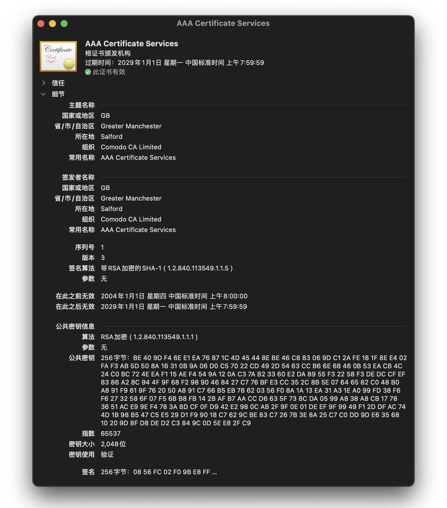
简单来说，认证机构用自己的私钥对需要认证的人或组织的公钥施加数字签名并生成证书，即证书的本质就是对公钥施加数字签名。
CA 证书颁发机构
CA（Certificate Authority）是证书的签发机构，它是公钥基础设施的核心，负责签发证书、认证证书、管理证书。
作为互联网信息服务商，它是如何获得证书的呢？
首先，服务商要先向CA提出申请，这一流程往往是线下的商务流程，主要任务是确认现实生活中各种资料；接下来，CA会确认服务商的身份，若通过审核则为服务商颁发公钥，并将公钥信息与用户身份信息绑定；最后，CA为绑定身份的公钥信息进行签名，签名结果即是证书，返还给申请者。根据这个证书颁发流程，我们可以发现CA也是拥有证书申请者的公钥以及私钥的。
CA通过证书赋予了服务商信任，那么网上的公众用户又该如何信任CA以及获得证书的服务商呢？答案是签名验证。对于CA，用户可以通过验证CA的签名来证明它的合法性（签名的验证过程实际上是使用公钥对私钥加密的数据段进行解密的过程）；而对于服务商，用户则可以选择使用CA的公钥对服务商证书进行签名验证，一旦验证通过，即证明了证书的有效性。
根证书
自古以来，有一个千古难题 —— 鸡生蛋，蛋生鸡，那么先有鸡还是先有蛋呢？
不知道你有没有发现，我们刚刚似乎遗漏了什么至关重要的东西——用户是如何验证CA签名的呢？为了解决这个问题，这里我们要引入一个新的概念——根证书（root certificate）。
在密码学和计算机安全领域，根证书是属于“根证书颁发机构”的公钥证书，在公钥基础设施体系中，它是信任链的起点，是一切安全信任的基石，通常来自公认可靠的政府机关、证书颁发机构以及非营利性组织。根证书在互联网领域获得广泛认可，通常被预先安装在操作系统、浏览器等软件中。
在时效性上，由于根证书的颁发和部署流程都非常复杂耗时，需要包括行政人员及机构法人身份的核准，所以一张根证书有效期可以长达20年以上。
一些大企业会自己研发及部署很多内部应用，他们会在内部电脑安装企业自签的根证书，以支持内部网络的企业级软件，但是由于这些证书未被广泛认可，因此只在企业内部应用环境可用。
信任链
想要了解什么是信任链，我们还要从根证书的签发说起。
由于终端直接面向用户的服务商数量巨大，根证书签发的效率又比较低，如果只有数量有限的根证书机构签发证书，将会严重影响证书授权数量。为了解决这一问题，中间商的身份被引入进来。中间商只要持有根证书机构签发的中介证书，就有权给服务商授权证书。这里服务商获得的证书叫终端实体证书。
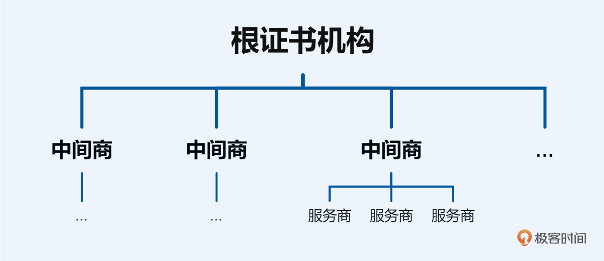
当互联网用户访问一个网站时，浏览器会执行认证路径验证算法，使用网站所提供的电子证书去对应系统预安装的根证书，通过验证两者是否匹配来判断从根证书到终端节点的路径是否为一条有效的信任链。如下图所示，整个信任链的结构是一个以根证书为顶层的树状结构。
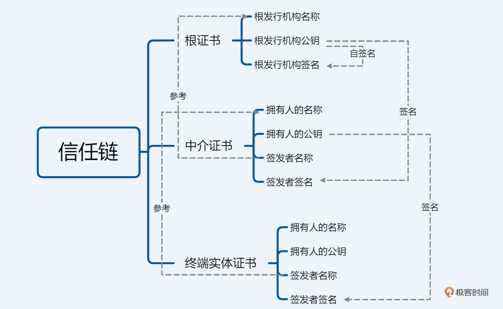
证书信任链的不正确回溯
在coding过程中，当我们需要对证书进行验证时，可能会直接调用证书验证函数来获取验证结果，但是却没有对证书信任链进行有效地回溯，这就可能导致错误的信任关系的产生。
简单来说，从证书验证过程获取的信任是从信任链中继承下来的，而信任链的终点是一个可信的机构实体。在通常的工作场景中，这条信任链会经过多个实体，这些实体会为信任链中的下一个实体做担保，信任链的起点就是终端用户访问的目标。
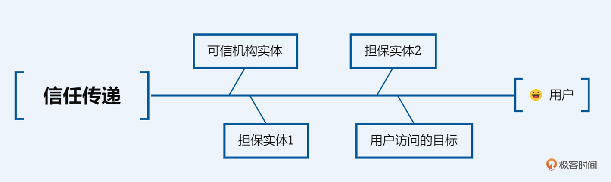
在用户获取了访问目标证书的情况下，如果想要建立信任关系，只检查第一层信任链是不够的，你需要对完整的信任链进行检查。
举例来说，以下这些场景都会导致信任链断裂：
- 信任链中任意一个非根节点的证书是自签发的（self-signed）；
- 没有完成整个信任链中每个节点的检查；
- 信任链中的某个节点证书缺失一些基础信息或者额外的重要扩展信息；
- 信任链中上层节点证书失效或者被攻击者窃取。
示例代码：
...
cert = ssl_get_peer_certificate(ssl);
if( cert && host )
foo = ssl_get_verify_result(ssl);
if( X509_V_OK == foo || X509_V_ERR_SELF_SIGNED_CERT_IN_CHAIN == foo)
return 0;
...
这是从网络上copy-paste的一段代码，你可以找到上述代码有什么安全隐患吗？
这段代码的安全隐患，主要是由于对证书验证过程理解不深刻导致的。代码作者直接使用了网络上的代码片段而没有仔细检查逻辑，使得这段代码允许了自签名证书的使用，因此并未构建有效地信任链，这就可能引发DNS污染或者中间人攻击等安全风险。
案例实战
Let’s Encrypt
如果我们有一个正在运营的Web应用，应该如何为这个Web应用配置一个SSL证书呢？
这里我们来通过MiTuan了解一下业内的SSL证书生态及使用方法。
首先，通过浏览器访问MiTuan主页，可以发现浏览器栏左侧有一个小锁的标志，这个锁的标志意味着该用户与该站点的通信受到保护，通信数据对于第三方是不可见的。
接下来，点击小锁并进入安全页，可以看到目前的证书是有效的：
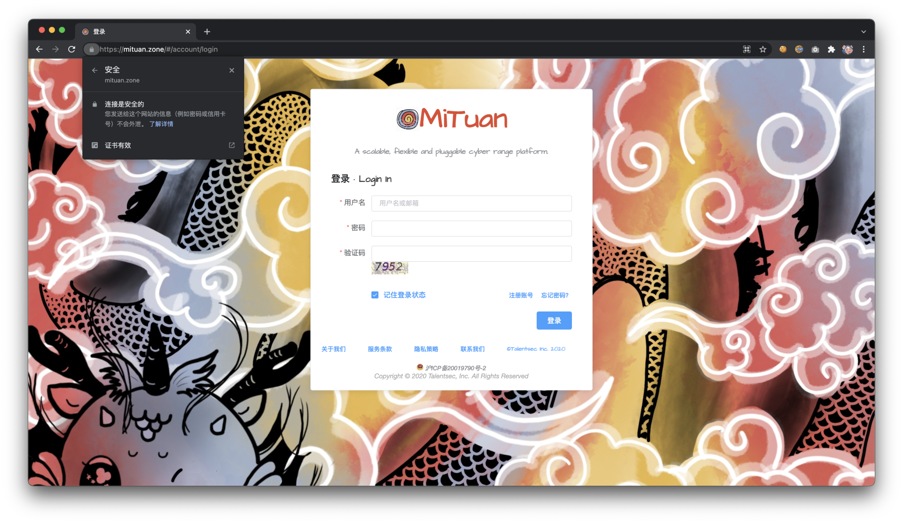
再接下来通过选择证书有效这个选项，我们可以打开证书信息：
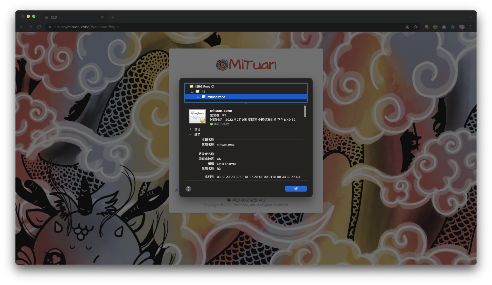
可以看到mituan.zone的证书由Let’s Encrypt签发；它的上级信任链节点是R3证书，R3证书所处的节点是一个中级证书颁发机构，R3证书由ISRG根证书签发；ISRG根证书属于Internet Security Research Group，该机构是一个根证书颁发机构。
关于Let’s Encrypt，它是一个非营利性的数字证书认证机构，旨在以自动化流程代替手动创建和安装证书，可以为网站提供免费的传输层安全协议（TLS）证书。Let’s Encrypt由ISRG（互联网安全研究小组）提供服务支撑。
从mituan.zone的访问来看，Let’s Encrypt的证书是有效的，那么为什么Let’s Encrypt签发的证书能够被识别为安全呢？
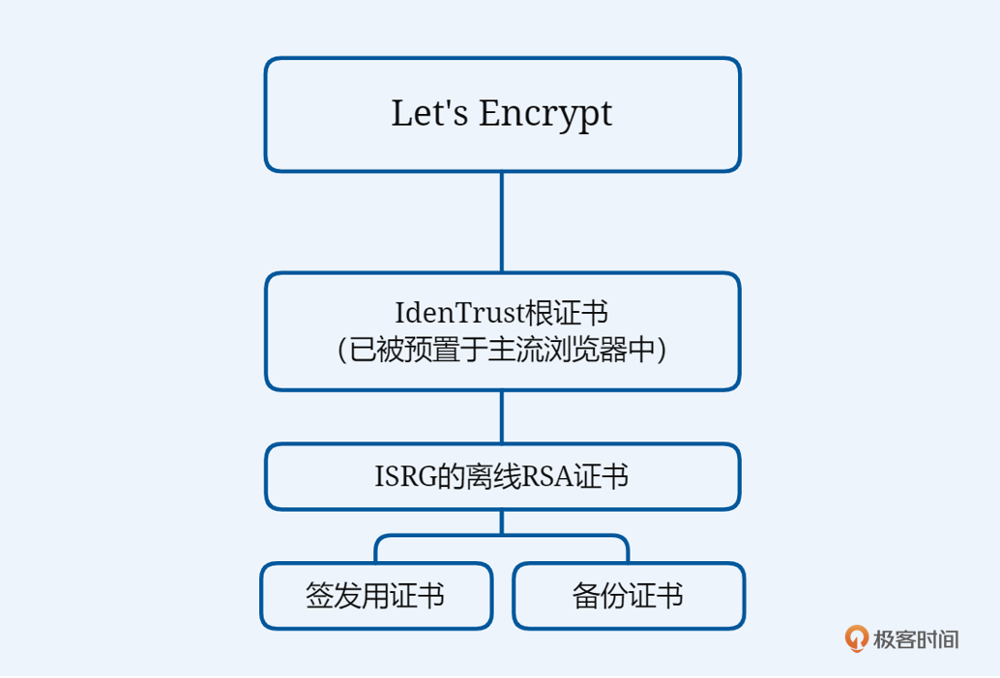
在技术实现上，Let’s Encrypt有一个由IdenTrust签名的根证书，该根证书在签署了两个子证书后离线储存，两个子证书分别用于签发请求和本地备份。而IdenTrust的CA根证书已经被广泛地预置在大部分浏览器中，因此Let’s Encrypt签发的证书可以直接被识别，用户甚至不需要在本地存放ISRG的根证书。
中间人攻击（MITM）
无论是开发中调试，还是安全项目中的模拟渗透，我们都会遇见一些场景需要调试Web应用的网络交互过程，这种调试工作一般是通过Proxy工具来完成的，在一般情况下Proxy工具都可以很好地完成任务，但是当TLS证书存在的情况下，事情会出现一些新的变化。
仍然以mituan.zone为例，此时我们希望在本地proxy工具中调试登录过程，让我们来试试看：
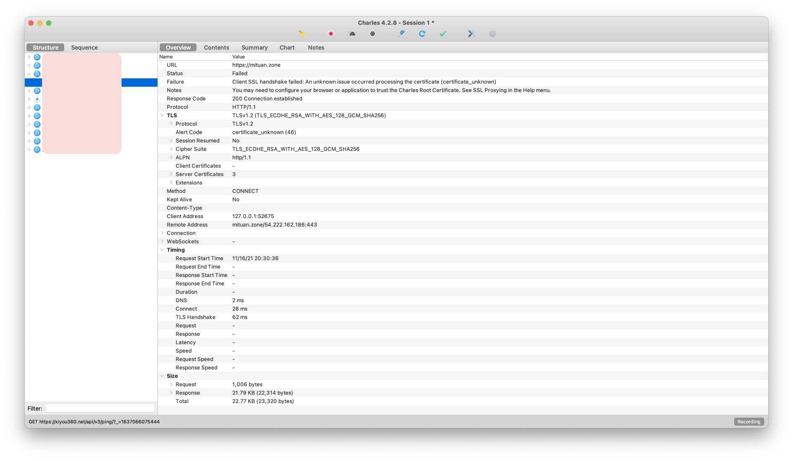
我使用的是Mac OS上面的Charles（Web Debugging Proxy）应用，可以看到打开Charles并启动代理流量捕获后，我们并没有成功获取到mituan.zone的通信内容，得到的是一个失败的说明——由于证书问题导致客户端SSL握手失败。
这是一个非常有意思的地方，上面失败说明中的客户端就是我们访问mituan.zone的浏览器。要知道，浏览器可是在我们自己手里，要不要信任对方还不是我们说了算？你说它可信，它就可信！但问题是，浏览器说的不可信指的是谁呢？
想要知道浏览器所指的certificate_unknown(46)错误究竟指谁，就要了解Charles的技术实现原理。实际上，Charles会自己启动一个Porxy，然后将Browser的访问流量导向Proxy，最后再从Proxy中将流量发到目标站点，通过这样的方式实现对于通信内容的捕获。
了解了实现原理，答案就很清晰了：浏览器所说的证书不可信，指的就是Charles的证书。
那我们接下来只需要将Charles的证书加载到系统内并设置信任即可：
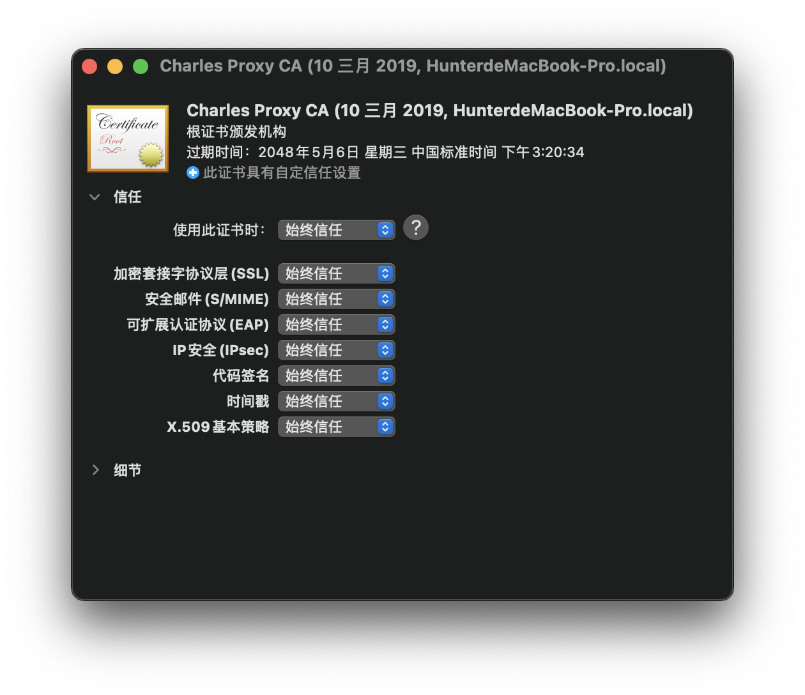
完成Charles的证书信任设置后，我们再次尝试捕获通信内容：
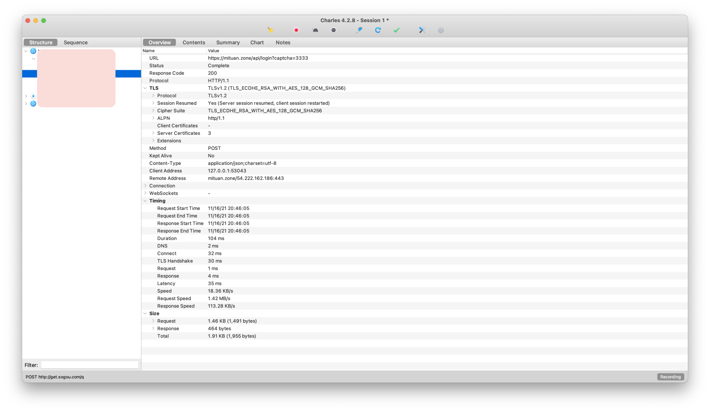
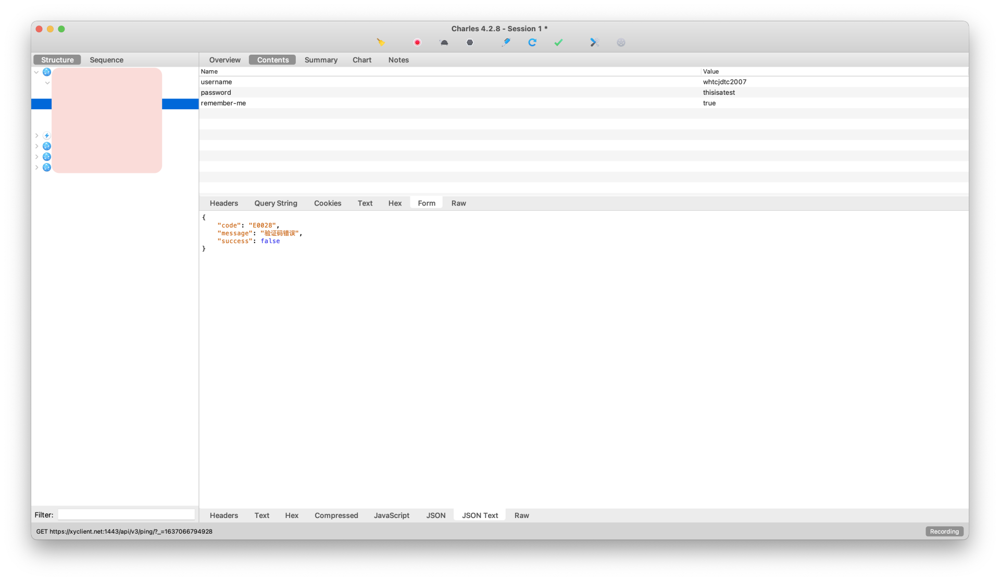
可以看到我们已经能够对TLS加密的HTTP请求进行内容分析了，这一过程在安全领域我们就称为——中间人攻击。
总结
这节课我们学习了如何使用加密知识构建互联网安全信任体系。
在互联网出现的早期，有一句流传很广的话——“在互联网上，没人知道你是一条狗”。这句话的背后意味着互联网身份的不可信，这种特性或许在匿名社交上有很大优势，但是在互联网商业服务领域却不可接受。来自互联网的终端用户需要一种方式，使他们能够确定访问的目标主体是真正的服务商，而不是骗子伪造的站点。
为了构建互联网信任体系，数字证书应运而生。它是一种基于公钥认证体系的电子文件，包含服务商的身份信息、公钥信息以及数字签名。这一体系的核心是证书颁发机构，也就是我们常说的CA。如果说CA是流程层面的核心，那么根证书则是技术层面的核心，通过信任链的层层传导，才能够完成整个互联网信任体系的搭建。
在本节课的实战案例部分，我们首先一起体验了TLS证书的检查以及申请过程，这些知识可以帮助你快速构建起安全的Web应用；接下来以Web调试需求为场景，我们又一起探索了Web调试工具的技术原理，以及MITM（Man-In-The-Middle Attack，中间人攻击）的实现思路。
相信通过本节课程的学习，你可以对证书以及信任链有一个清晰、整体的理解。这些知识不仅在构建安全的Web应用领域会对你产生帮助，更会在加密体系加持的多种新兴技术领域让你快速成长。
思考题
你可以尝试通过OpenSSL来生成自己的root CA以及签发证书吗？
欢迎在评论区留下你的思考，我们下节课再见。
© 2019 - 2023 Liangliang Lee. Powered by gin and hexo-theme-book.